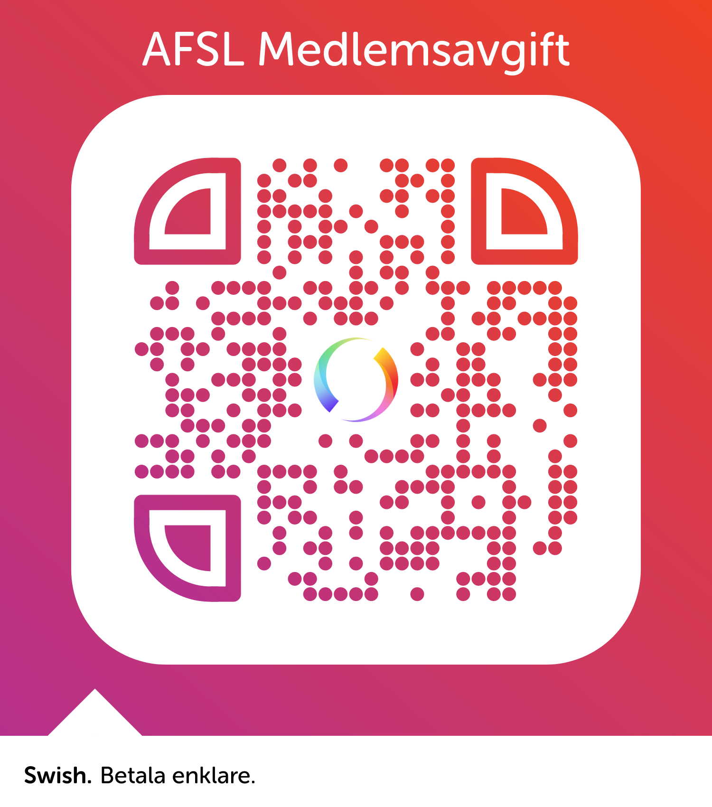

Bli medlem i AFSL
och bidra till ”ett bättre Lund”, där samhällsbyggandet ska sikta mot trivsamma och ändamålsenliga stads- och landskapsmiljöer, som gynnar hälsa och hållbarhet. Hänsyn ska tas till kulturhistoriska, estetiska och arkitektoniska värden. Detta ska vara målet för arbetet med den fysiska ramen kring våra liv, för såväl barn och ungdomar som vuxna eller äldre.
Föreningen Aktionsgrupper För Samhällsbyggande i Lunds kommun, AFSL är en ideell, politiskt obunden förening. I styrelsen finns inte bara flera fristående arkitekter, utan kopplingar till kommun eller byggföretag, utan även lundabor med stort intresse för hur vår stad skall utvecklas. AFSL granskar kommunens byggprojekt och planer, bildar opinion i angelägna frågor och vill verka för en bra dialog mellan lundabor och stadens politiker och tjänstemän.
Om du är intresserad av någon särskild fråga och vill medverka i föreningens arbete, så mejla till info@afsl.se
Medlem blir du att genom mejla namn och adress till info@afsl.se och betala in årsavgiften på 100 kr till bg 5568-0029 eller swisha till: 123 649 95 37. QR-koden går till AFSLs swish. Glöm inte att ange ditt namn.
